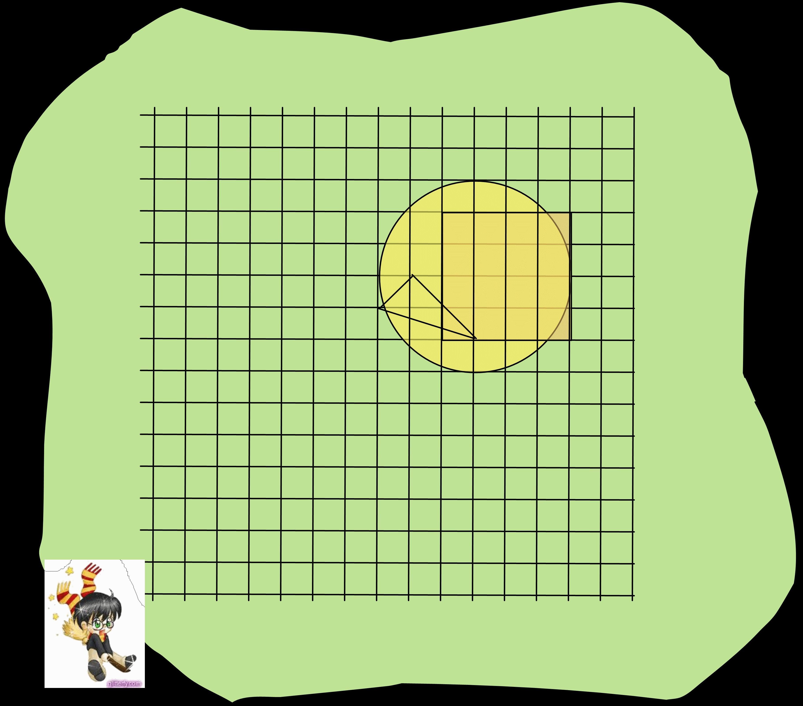

ACM International Collegiate
Programming Contest, Asia-Amritapuri Site, 2011
Problem B: Save the Students!
Hogwarts is under attack by the Dark Lord, He-Who-Must-Not-Be-Named.
To protect the students, Harry Potter must cast protective spells so
that those who are protected by the spells cannot be attacked by the
Dark Lord.
Harry has asked all the students to gather on the vast quidditch sports
field so that he can cast his spells. The students are standing
in a 2D
plane at all grid points - these are the points (x,y) such that both x
and y are integers (positive, negative or 0). Harry's spell can take
the shapes of triangle,
circle or square, and all who fall within that shape (including its
boundaries) are protected.
Given the types of spells and the details regarding where Harry casts
the spell, output the number of people saved by Harry's spells.
Input (STDIN):
The first line contains the number of test cases T. T test cases follow.
Each case contains an integer N on the first line, denoting the number
of spells Harry casts. N lines follow, each containing the description
of a spell.
If the ith spell is a triangle, then the line will be of the form "T x1
y1 x2 y2 x3 y3". Here, (x1,y1), (x2,y2) and (x3,y3) are the coordinates
of the vertices of the triangle.
If the ith spell is a circle, then the line will be of the form "C x y
r". Here, (x,y) is the center and r is the radius of the circle.
If the ith spell is a square, then the line will be of the form "S x y
l". Here, (x,y) denotes the coordinates of the bottom-left corner of
the square (the corner having the lowest x and y values) and l is the
length of each side.
Output (STDOUT):
Output T lines, one for each test case, denoting the number of people
Harry can save.
Constraints:
All numbers in the input are integers between 1 and 50, inclusive.
The areas of all geometric figures will be > 0.
Time Limit: 3 s
Memory Limit: 32 MBytes
Sample Input:
4
1
C 5 5 2
1
S 3 3 4
1
T 1 1 1 3 3 1
3
C 10 10 3
S 9 8 4
T 7 9 10 8 8
10
Sample Output:
13
25
6
34
Notes/Explanation of Sample Input:
Illustration of Testcase 4.
